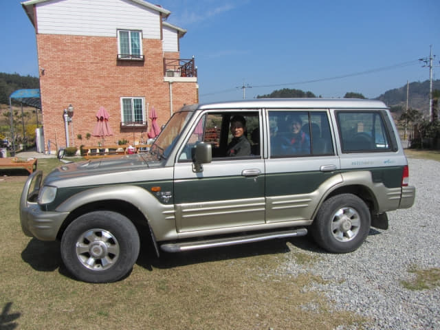
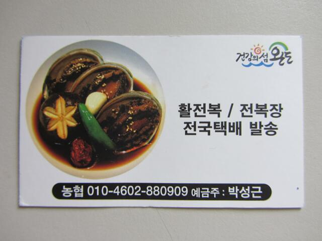

在青山島很容易找到了一間環境優美的鄉村民宿, 將行李放置好後, 收拾一些隨身攜帶的用品及青山島的步行地圖, 正想離開之際, 突然有人敲我們的房門, 原來是民宿主人, 他恐怕我們不知道往那裡遊覽, 準備了一張青山島彩色地圖, 很詳細的在地圖上圈了青山島最受歡迎和風景最美的 1 號步行路線, 教我們如何走, 接著走出露台, 用手指向前面黃澄澄的油菜花田, 表示那裡便是 1 號步行路線, 指導我們走的方向, 可以說比任何導遊更清楚、更詳細, 並不時叮囑我們: 一定要「SLOW~~~~~~~」, 今天只走 1 號步行路線便足夠了, 不要走太多, 跟著又說了幾次一定要「SLOW~~~~~~~」!
介紹完 1 號步行路線給我們, 以為可以開始青山島的行程, 但民宿主人還是不放心, 恐怕我們迷途, 便教她如何打電話給他, 但她的手機沒有漫遊卡, 根本不可以打電話, 只可以用 What’s App 來溝通, 但民宿主人又不知道什麼是 What’s App, 韓國這裡好像是用另一個類似的即時通訊程式; 比手畫腳溝通了幾分鐘後, 他終於明白什麼是 What’s App, 並立即安裝, 但總是無法使用。其實如果在山中迷途, 沒有 Wi-Fi, What’s App 根本沒法使用。
花了差不多半小時, 都無法用 What’s App 互相通訊, 應該是設定上出現了問題。沒辦法, 想起警察局那位警員懂英文, 便立即載我們往那裡求助。

警察局離民宿不遠, 就在海灣旁, 幾分鐘便抵達。在警察局內又搞了十多分鐘, 民宿主人的手機都無法用 What’s App 和她的手機通訊, 最後決定放棄。看看手錶, 時間已經差不多早上十時半, 我們也需要開始青山島的行程, 便在這裡和民宿主人暫時說拜拜。
因為今早只吃了一個麵包, 肚子已開始有些餓, 便決定先往碼頭那裡的餐廳提早吃午餐, 然後才正式開始青山島的行程。
悠閒的青山島港
離開警察局, 沿漁港旁朝青山島碼頭那裡走去, 也順便欣賞漁港和沿途風光。
美食車。
蝸牛設計的洗手間, 莫非大小便也要 SLOW~~~~~, 難度頗高卦!
慢行之鐘 (느림의종)。每次經過這鐘時, 我們總要輪流敲打幾下, 噹噹的聲音迴盪整個山谷和海港, 提醒所有遊客要慢行~~~~~放鬆身心~~~~, 相信也是在碼頭附近設立這鐘的最主要目的。來青山島旅遊的朋友, 不妨在出發前先敲打幾下慢行之鐘。
繼續朝青山島碼頭的方向走。
來到青山島碼頭前的街道, 這裡有很多餐廳, 不過很多尚未開始營業。
막끌리네식당 海鮮餐廳 鮑魚午餐
原本只打算只吃簡單的「午餐」, 但發覺海鮮餐館比普通的餐館還要便宜, 比較了幾間海鮮餐館後, 最後選擇了離青山島碼頭不遠的「막끌리네식당」海鮮餐廳吃午餐。
進入餐廳, 又要面對如何點菜的問題, 幸好這時只有我們兩位顧客, 店員還勉強可以保持耐性, 容忍我們這兩位外星人, 經過幾分鐘比手畫腳的共通身體語言, 原來牆壁上的菜單在這時段並不是全部供應的, 可能只供應兩至三個, 在沒有什麼選擇下, 便叫了兩客不知是什麼東東的餐。
餐廳的裝修很大眾化, 好像食堂。
餐廳的效率很高, 只等了一會, 食物便陸續送上。
很想知道我們叫了什麼食物。
登登登櫈 ……..
原來其中一個是鮑魚片撈飯!
另一個是原隻鮑魚牛骨湯。

看看配菜, 細的鮑魚竟然是用來做配菜! 太奢侈吧!
這一餐真是有點驚喜, 鮑魚十分爽口鮮甜, 滋味無窮! 結帳是鮑魚撈飯, 每客 11,000韓元; 原隻鮑魚牛骨湯飯, 每客同樣是 11,000韓元; 總數是22,000韓元, 以這樣的食物素質, 可算超值。在青山島, 鮑魚比豬肉和牛肉更便宜!
막끌리네식당 海鮮餐廳名片


{kind=link}